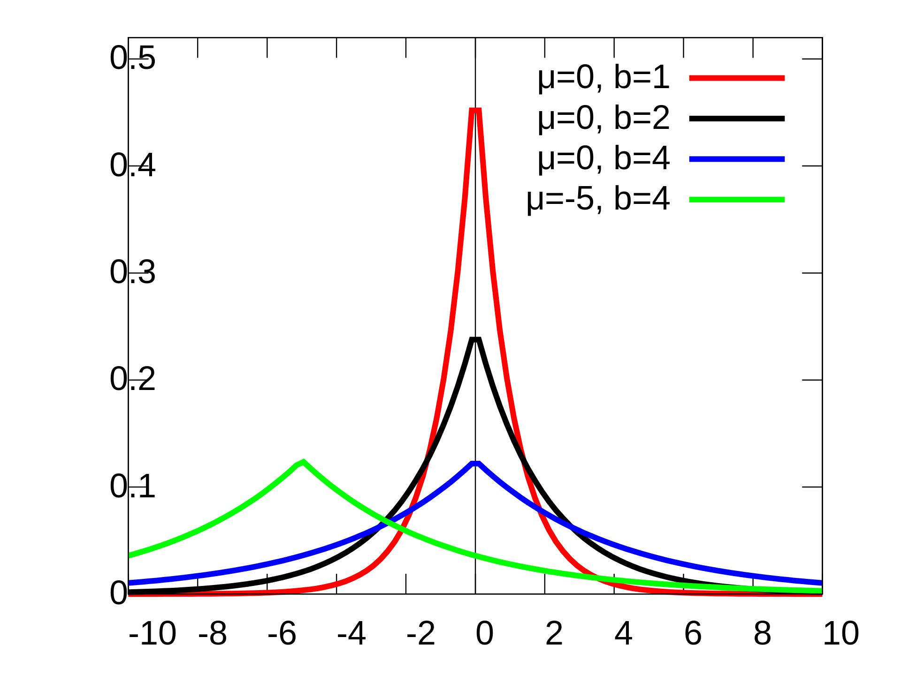

home
Your VAE Sucks
Your proxies for reconstruction loss suck
Training a image autoencoder only using MSE loss will lead to blurry reconstructions. This is probably because MSE is a bad proxy loss for human image perception.
This article excellently describes the different problems with MSE loss for image pixels.
To try and fix this, lots of different tricks are used to try and get less blurry images. In the original stable diffusion paper, they train their VAE using LPIPS and a patch based GAN alongside MSE loss. The tricks seem to work; the stable diffusion VAE is generally quite high quality and not blurry.
Training VAEs is a bit like black magic. A recent Meta paper Emu, dropped an elusive hint about how they were able to get their VAE to respect edges and fine details in the image reconstructions.
"To further improve the reconstruction performance, we use an adversarial loss and apply a non-learnable pre-processing step to RGB images using a Fourier Feature Transform to lift the input channel dimension from 3 (RGB) to a higher dimension to better capture fine structures."
The paper does not expand on what or how or why they chose to use fourier features. I was motivated by this point to explore what the 2D FFT is, and how it can be used in image autoencoders to improve the reconstruction quality.
Your compression ratios suck
The stable diffusion VAE has a compression ratio of (512 height * 512 width * 3 channels * 8 bits) / (64 height * 64 width * 4 channels * 16 bits) = 24
(The VAE is meant to run at 32 bit precision but the z embeddings can be cast down to 16 bits)
The image generation paper, Emu trains a high quality VAE with a compression rate of (512 height * 512 width * 3 channels * 8 bits) / (64 height * 64 width * 16 channels * 16 bits) = 6
(I'm guessing that the VAE for Emu runs at 16 bit precision, but Meta is coy with their description of the model so who knows?)
24 compression and 6 compression. That's not bad, is it? But realize that this is compression measured over raw image pixels. The baseline here is naively storing all pixels. When are we ever dealing with images that are stored as their raw pixels? Usually we use our ye olde compression formats like jpg. How much compression does jpg get compared to raw pixels?
 Lossless original Lenna image
JPG reconstruction
Lossless original Lenna image
JPG reconstruction
lenna.jpg is 31 KB. The raw pixels of a 512x512x3 image take 786 KB. This is a compression ratio of 25.
As it turns out, our old friend jpg gets a better compression ratio than does the stable diffusion VAE. In my opinion the two are close to the same in their reconstruction quality.
The Lenna image reconstructed from the stable diffusion VAE.
JPG reconstruction (compression ratio of 25)
VAE reconstruction (compression ratio of 24)
However, the compressed format that a VAE gives us is more useful than the compressed format that jpg gives us. VAEs have a continuous, smooth, latent space. You can interpolate between two images; the embeddings actually have some semantic meaning. A compressed jpg file on the other hand, is neither smooth nor continuous.
JPG in a nutshell, and how it almost beats the stable diffusion VAE
JPEG is an algorithm that compresses images. It can produce competitive reconstructions than most VAEs at the same compression rate.
A very simplified explanation: jpg first converts image pixels to DCT space, and then cuts down on many of the bytes that represent high frequencies. JPG keeps most of the bytes being used to represent the low frequencies.
What is a discrete cosine transform (DCT)? DCT represents an image as a weighted combination of DCT basis images. This image shows all 16 of the 16x16 basis that would go into representing a whole 16x16 image. DCT is completely lossless. It is a way to represent an image as the magnitudes of a bunch of different component frequencies. When you take the 2D DCT of an image, you get a 2D matrix of the weights of each of the DCT basis.
We can mask out some of the DCT features of a transformed DCT-space image and see what effect it has on the iDCT reconstructed image.
16x16 DCT basis. The top left corner holds the most low frequency features. The bottom right corner holds the most high frequency features.
Masking out the high frequency DCT features; we keep the low frequency signals.
Masking out the low frequency DCT features; we keep the high frequency signals.
I'm gonna do a short experiment. I want to show that the high frequency signals in an image are mostly unimportant. I'll take an image, convert it to frequency space using the DCT transform, and then drop some percentage of the highest/lowest frequencies in an image. Then I'll use the iDCT to convert the masked DCT features back in into image pixels.
Dropping different percentages of the lowest, and highest frequencies. The first column shows the effect of dropping the all but the p highest frequencies. The second column shows the effect of dropping all but the p lowest frequencies.
Retaining only the high frequency information, on the other hand, really doesn't store the information that is important for the layout of the image. JPEG works well because a lot of the compression it does is over the high frequency signals; which for the most part are superfluous to the image as a whole.
TODO TODO As a side note, maybe a promising future research direction is to only have your generative image model generate features directly in feature space, only requiring your model to produce the low frequency parts of an image. This would let you by default take advantage of the juicy 20 compression that you'd get from simply dropping the high frequency signals.
DCT loss, and the distribution of DCT features
Back to the topic of VAE reconstruction. We had the problem that using pixel-level MSE reconstruction loss to train VAE is bad because it causes the reconstructions to be too blurry. How can we resolve this using DCT features? The general pattern of shapes and colors of an image are represented by the low frequency components. These low frequency components are what VAEs by default are good at reproducing.
The sharp edges and high detail parts of an image exist as high frequency signals. If we want our VAE to be better at producing the details of an image, we should score it using some sort of loss over the DCT frequency signals. We can manually encode the 'image detail loss' using DCT as a simple handmade metric. This is better because it frees us from having to use complicated and unstable GAN loss.
What kind of loss would we use over the DCT features? DCT features are generally assumed to be distributed according to the Laplacian distribution; check out this paper from 2000. They have a nice figure that shows a histogram which visualizes the distribution of DCT features taken from 8x8 patches of an image.

Figure from Wikipedia, showing the Laplacian distribution with different location and scale parameters
Figure from E. Y. Lam and J. W. Goodman, "A mathematical analysis of the DCT coefficient distributions for images"
This is a histogram of DCT features of 8x8 patches of images
Notice the sharp peaks and long tails; looks an awful lot like a Laplacian to me
Each DCT feature of the 8x8 image patches seems to have different scale and location parameters.
This is a histogram of DCT features of 8x8 patches of images
Notice the sharp peaks and long tails; looks an awful lot like a Laplacian to me
Each DCT feature of the 8x8 image patches seems to have different scale and location parameters.
DCT Feature Normalization
It is probably not a good idea to take the L1 loss over the raw DCT frequency floats and I'll explain why.Without normalization, the DCT features will have a very high variance, or in other words be very far spread out.For example, across many different images, the DCT feature at (0,0) varies wildly, and is usually very large. This high variability is not good for our machine learning models; we the DCT loss function to be more stable in order to prevent massive loss spikes and erratic weight updates.
Additionally, not using loss over normalized DCT features will cause the (0,0) element to dominate the entire loss. Calculating the loss over normalized DCT features will have more equal wieghting over all of the DCT features, regardless of the naturally occuring variance.
There are some drawbacks to the dct feature normalization. You have to record the statistics over (height*width*image channels). This is potentially expensive. Getting the normalization to work with arbitrary heights and widths requires a bit of coding but is possible. Also, the 'location' parameter of the laplacian distribution is computed as the median of a random variable. Computing the median is difficult to do on a stream of data.
DCT-Autoencoder
I was motivated by all of the above to try and use some creative thinking and come up with a model that ameliorates some of the issues faced by VAEs and other current image autoencoders. I propose that an autoencoder that inputs and outputs DCT features would be better than an autoencoder which deals with image RGB pixels. By better, I mean that it will have lower compute/training requirements, higher/flexible compression, and better fine-grained detail reconstruction.
Requirements:
Here is a summary what requirements we need for an autoencoder that can input and output DCT features1.) Inputs and outputs a variable number of the most important DCT features (taken from the upper left corner of the 2D DCT of an image)
2.) Has some sort of compressed latent space. (A quantized latent space would work well, and have nice properties for downstream models)
3.) Can utilize (attend to) the relationship between DCT features
4.) Can be trained at scale
If it's not already obvious, I think an excellent candidate for the DCT-autoencoder model is a transformer.
DCT-autoencoder - Transformer
How do you use a transformer for this? There are some of my listed requirements that are not immediately and obviously satisfied.For instance, how do you get the model to input and output a variable number of dct features, in a batch? Think about the usual transformers used for image modeling, ViTs. They patchify an image, the patches becoming the input 'tokens' to the transformer. But you might protest, ViTs don't work with variable resolutions! Yeah, the original open-AI clip ViT didn't accept varying resolutions, it just cropped all images to a square before patching. But there's nothing inherently preventing ViTs from accepting varying resolutions. Check out Pack n' Patch; in this paper they use some attention masking magic to allow ViTs to process batches that contain images at different resolutions.
There's another immediate problem, how do you patchify DCT features? Maybe just use square patches of the 2D DCT features. But does this impose any wierd locality restraints? Are DCT features in a 2D local region instrinsically related? I don't know. Instead of square patches of DCT features, it might be better to do something else. But square patches for now are fine because I can't think of anything else.
Experiment and setup
I am lucky enough to have a 3090 GPU and 1TB of spare disk space. It keeps my basement warm in the winter. I bought my gpu from a guy on KSL that was using it to mine bitcoin so I snagged a good deal, but I had to bike home 20 miles with it in my backpack.I downloaded the laion aesthetics 6+ image/text dataset. This dataset contains 12 million images filtered from laion 5B. These images have english captions (which I don't need to use) and have high predicted aesthetic scoring. Is this enough and diverse enough? I don't know.
Preprocessing steps:
1.) The image is resized so that they are a multiple of the patch size. So if an image is 129 by 1000, and the patch size is 16 by 16, the image will be resized to 128 by 992.2.) The image is cropped to some max height/width, so that 768 is the max side res.
3.) The image is converted from RGB values in [0,1], to the ITP color space. (See: the paper and wikipedia). This is similar to what happens in JPEG and JPEGXL. Euclidean distance in ITP color space is meant to correspond to percieved perceptual distance for humans. Also, the first channel represents the greyscale intensity of an image.
4.) The image gets it's DCT transform taken.
5.) The 2D DCT image is patchified, here is the code for that (using einops):
# x is an image: channels, height, width # patches x into a list of channels and their patches x = rearrange(x, "c (h p1) (w p2) -> (h w) c (p1 p2)", p1=patch_size, p2=patch_size, c = channels)I use a patch size of 16 by 16. Note that unlike in ViT patching, I don't include the channels in the patch; patches are taken independently across different channels.
6.) I discard the unimporant patches, and keep the important patches. There are different ways to define 'important'. I still haven't figured out a good heuristic, but in my implementation I keep the patches which are closest to the top left corner, and also keep some of the patches which have a very high magnitude max element in them. Definately more work is needed on this part. I also randomly sample the total number of patches using an exponential distribution. I want the model to be trained on images of varying patch size. I also try to weigh the number of patches for to the I (intensity) channel 8 times more than for the other two M and S channels. I do this because humans can distinguish differences in greyscale intensity better than they can distringuish differences in color. Again, a lot of improvement is needed in this step 6.)
Also I make sure to store the patch positions, and patch channels as integer indexers. Patch positions are the (h,w) positions of the patches in the DCT image, a single tuple per patch. Also patch channels are a single channel number per patch
7.) Patches are batched by using the same method as pack n' patch: Using some attention masking magic, as well as some padding at the end of each sequence, differently lengthed patched images can be packed together into batches.
Channel Importances:
The paches that are from the intensity channel are more important for reconstruction quality than patches that are from the other two color channels. I'll do a short demonstration of this. I'll take an image, run it through my preprocessing pipeline (not through the autoencoder), and look at the effect of keeping different proportions of the patches from different channels. I'll keep the total number of patches the same, at 89.channel I: 30
channel Ct: 30
channel Cp: 29 channel I: 56
channel Ct: 17
channel Cp: 16 channel I: 83
channel Ct: 3
channel Cp: 3 channel I: 87
channel Ct: 1
channel Cp: 1
Patch normalization
As mentioned before, it is important to normalize DCT features. I run about 10 batches through a custom normalization module that I call PatchNorm. For an input batch of patches and their channels indices and position indices, PatchNorm computes the median of each DCT feature at each patch position and channel. Over different batches, it takes the mean over the current running estimate of the median. PatchNorm also records an estimeate of the mean absolute deviation from the median.I train PatchNorm on several batches of patches, and then freeze it.
The Transformer
I use a 12 layer encoder, and 12 layer decoder, with feature dim 512. Both of these are transformer encoders (bidirectional transformers). I use the xtransformers library by lucidrains. I use 16 attention heads and sandwich norm and glu activations and no learned bias in ff linear layers.This amounts to 120M parameters. I train it using a batch size of 30 and a sequence length of 256 and bf16.
The Latent Space
I use vector quantization, using lookup free quantization (LFQ), from the lucidrains VQ repo. In practice, what this means is that every patch after being processed by the encoder is converted into 32 integer codes, each code being from 0 to 4095. Then these codes are converted back into real number vectors and passed to the decoder.I measure the perplexity of the code usage, and get very high values around 4050. This indicates that there is very high codebook usage.
The Loss
I use a combination of losses, firstly there is the L1 loss between normalized patches and their reconstructions after being passed through the autoencoder.I also take L1 loss between unnormalized features; I keep this in the expression because it encourages the model to correctly reconstruct dct features with high variance, like the (0,0) DCT feature. Without this loss I found that the global brightness/darkness of an image as determined by the DCT (0,0) component would fluctuate wildly in reconstructions.
I also use the entropy and commitment loss as used by the original LFQ paper. I don't know if including this made any difference.
Results: